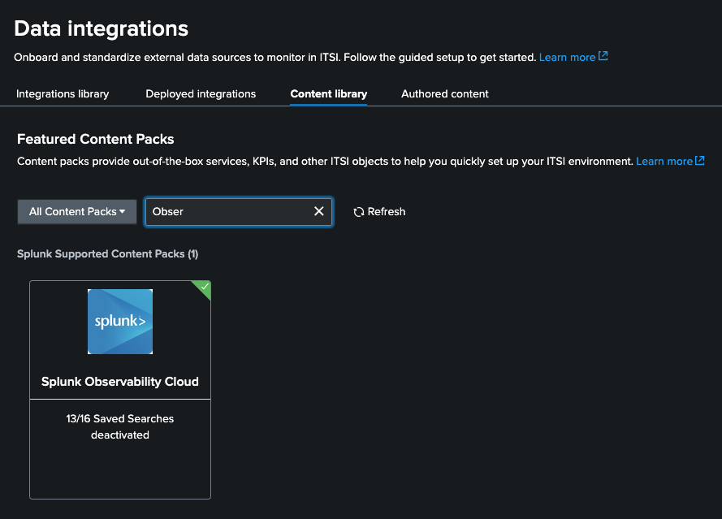
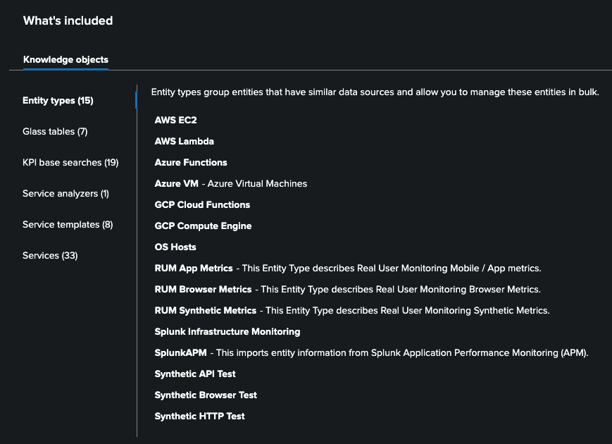
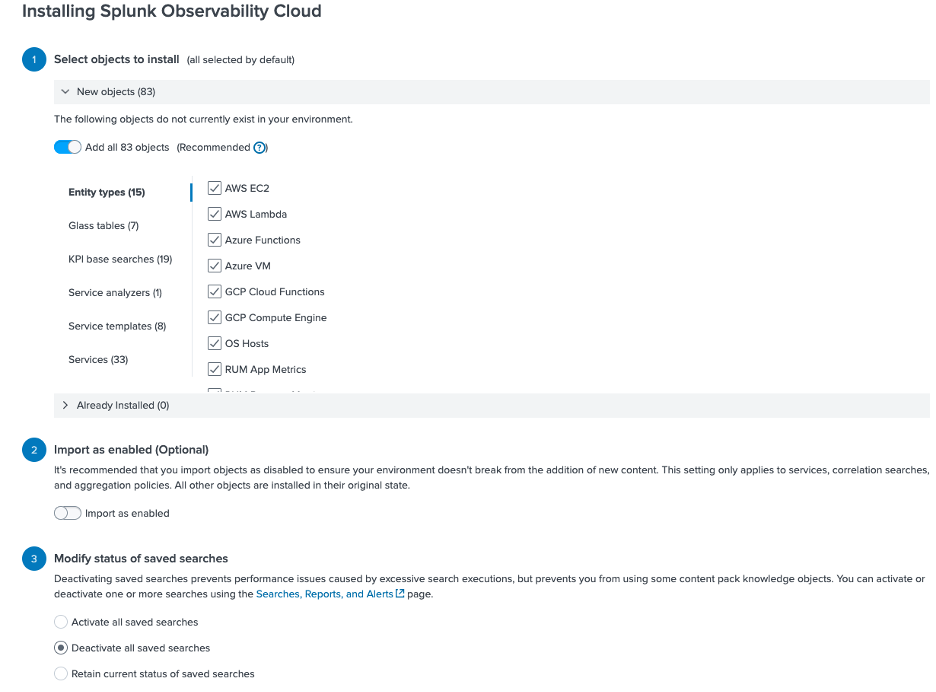
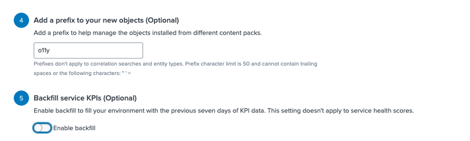
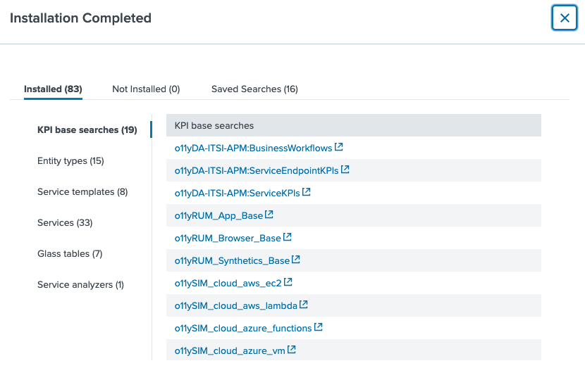
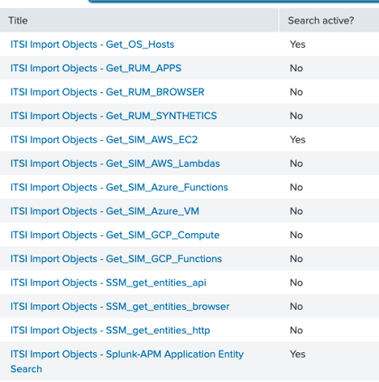

Splunk Observability Cloud (O11y) — Content Pack Configuration
This page describes how to install and configure the Content Pack for Splunk Observability Cloud within ITSI. This content pack bridges Splunk Observability Cloud (including APM, Infrastructure Monitoring, and RUM) with ITSI, enabling unified service monitoring and entity discovery.
📚 Official documentation: Install and Configure the Content Pack for Splunk Observability Cloud
What This Content Pack Provides
The Content Pack for Splunk Observability Cloud gives you:
- Entity discovery searches to import hosts, AWS EC2 instances, and APM application entities from Observability Cloud into ITSI.
- Pre-configured KPI base searches covering infrastructure metrics, APM traces, and synthetic monitoring data.
- Service templates for common Observability Cloud entity types (APM, infrastructure, RUM).
- Glass tables and dashboards for unified observability within ITSI.
ℹ️ This content pack depends on data collected by the Splunk Infrastructure Monitoring Add-on. Install and configure this add-on across all tiers of your Splunk deployment (heavy forwarders, indexers, search heads) before proceeding.
⚠️ Migrating from Content Pack for Splunk Infrastructure Monitoring? If you previously installed that content pack, follow the migration guide before installing this one.
Prerequisites
- [ ] Splunk Infrastructure Monitoring Add-on installed and sending data.
- [ ] Splunk App for Content Packs v2.3.0 or later installed.
- [ ] A full ITSI backup taken (recommended before any content pack installation).
Step 1 — Install the Content Pack
- In ITSI, go to Apps > IT Service Intelligence.
- Navigate to Configuration > Data Integrations.
- Click the Content Library tab to see all available content packs.

- Search for Observability in the search bar.

- Click on the Splunk Observability Cloud content pack and review the list of available objects.

⚠️ Best Practice: Content pack objects are disabled by default upon import. Do not enable everything at once — selectively enable only the searches relevant to your data sources.
-
On the same screen, click Proceed to begin the installation.
-
We will install everything disabled. Make sure you leave yours the same as the example below


-
Click Install selected and then install (skip backups)
-
You should see this

Step 2 — Enable Entity Discovery Searches
After installation, enable the following Entity Discovery Searches for the Observability Cloud data sources you use:
| Search Name | Purpose |
|---|---|
ITSI Import Objects - Get_OS_Hosts |
Discovers OS-level host entities |
ITSI Import Objects - Get_SIM_AWS_EC2 |
Discovers AWS EC2 instances from Infrastructure Monitoring |
ITSI Import Objects - Splunk-APM Application Entity Search |
Discovers APM application entities |
To enable each search:
- In the ITSI menu, go to Configuration > Entity Management.
- Click Entity Discovery Searches.
- In the App dropdown, select Content Pack for Splunk Observability Cloud (
DA-ITSI-CP-splunk-observability). - In the Owner dropdown, select All.
- For each search marked as Yes in the table below:
- Click the search name, activate it, save.
- Adjust the cron schedule like you did with the others.
*/5 * * * *

Follow the same scheduling logic used for AppDynamics and ThousandEyes — set the cron expression to run every 5–10 minutes for lab environments.
Step 3 — Validate
Once entity searches are running:
- Wait 5 minutes and check if the searches you've enabled are returning any values
📚 Full reference: KPI Reference for the Content Pack for Splunk Observability Cloud